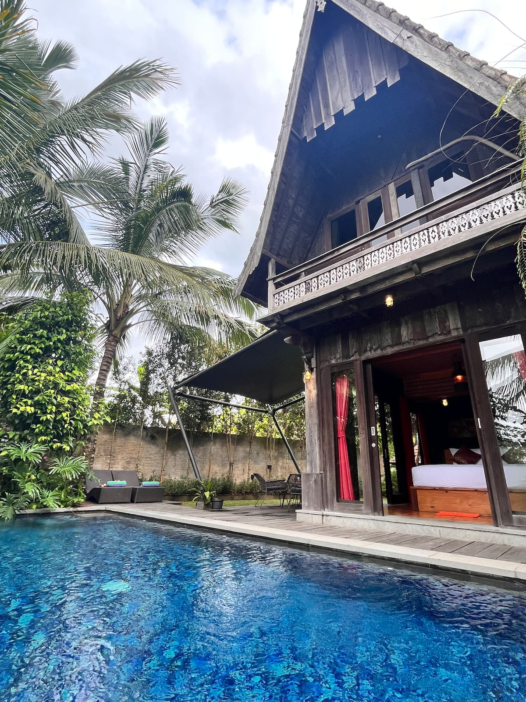
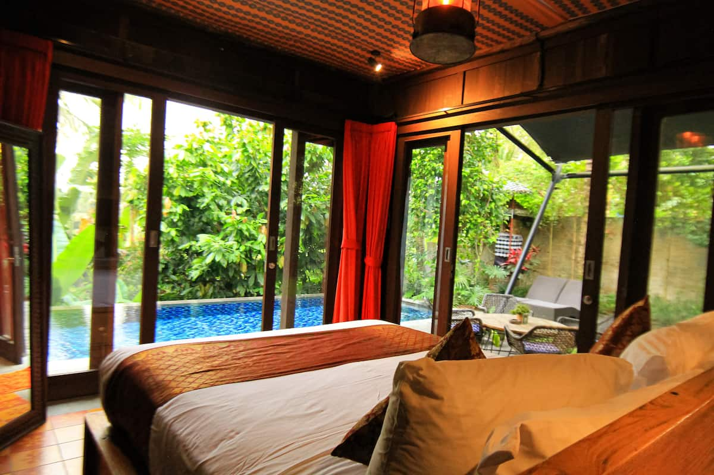
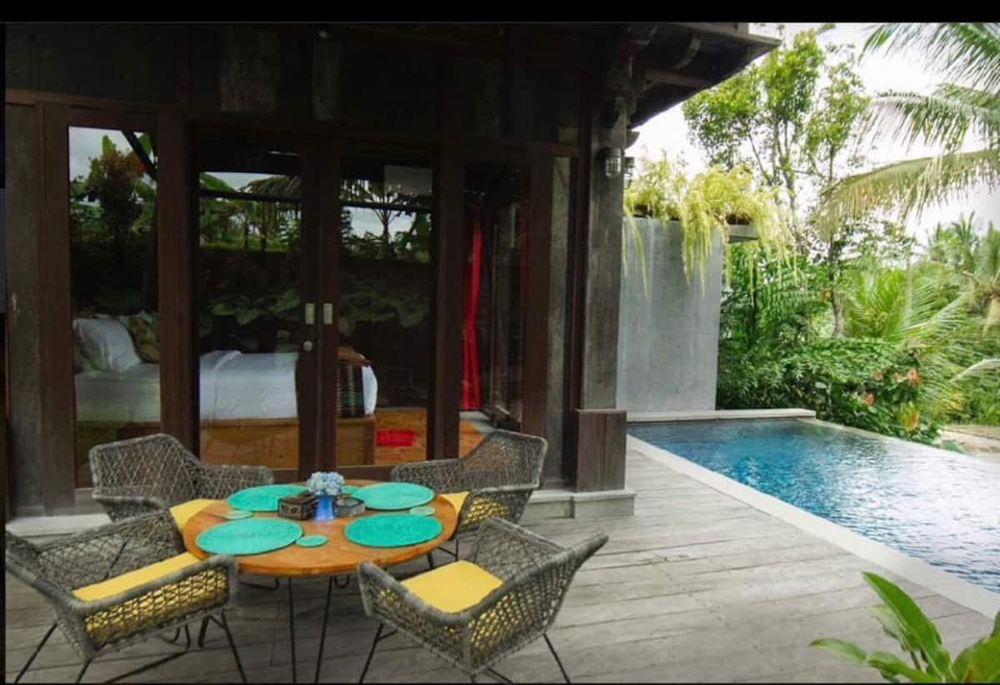

Villa Photos






Villa Overview
2 Bedrooms
Wooden finish, AC
2 Bathrooms
Semi-outdoor showers
4 Guests
Ideal for pairs
Private Pool
Rice field views
Unique Design
Traditional wood architecture
Kitchen
Basic cooking facilities
🪵 Why This Villa is Special
183 reviews and a 4.98 rating make this one of the most loved villas in all of Bali! The traditional Javanese wooden house design creates a unique, authentic atmosphere. Wake up to mist rising over emerald rice terraces. It's near the famous Tegallalang Rice Terraces but tucked away in a quieter corner.
Amenities
Sample Week Itinerary
Arrival & Wooden Paradise
Tegallalang Rice Terraces
Ubud Culture Day
Monkey Forest & Sacred Sites
Work Day + Local Life
Adventure Day
Spa & Relaxation
Restaurants Nearby
Sari Organik
Walk through rice paddies to reach this organic farm restaurant. Fresh ingredients, stunning views. The journey is part of the experience!
View on Map →Clear Cafe
Massive health-focused menu. Smoothie bowls, raw food, and comfort favorites. Great for remote work with fast WiFi.
Visit Website →Milk & Madu
Australian-style brunch spot. Famous eggs benedict, excellent coffee. Book ahead for weekend brunch.
View on Instagram →Mozaic
Fine dining in Ubud. Chef Chris Salans' French-Indonesian degustation. Perfect special occasion spot.
Visit Website →Activities & Experiences
Tegallalang Rice Terraces
UNESCO-worthy terraces 5 minutes away. Go at sunrise for empty paths and magical light. Bring a good camera!
Sacred Monkey Forest
Ancient temple complex with hundreds of monkeys. Keep belongings secure! Beautiful banyan trees and moss-covered statues.
Mt. Batur Sunrise Trek
Active volcano with sunrise breakfast at the summit. 2-hour moderate hike. Book a guide from Ubud.
Karsa Spa Flower Bath
The famous Instagram flower bath! Includes massage and overlooking rice fields. Book 2-3 days ahead.
Monthly Budget Breakdown
| Expense | Estimated Cost |
|---|---|
| Villa (30 nights) | $1,949 |
| Food & Dining | $700 - $1,000 |
| Scooter Rental | $120 |
| Activities & Tours | $300 - $500 |
| Spa & Wellness | $150 - $300 |
| Misc & Transport | $100 |
| TOTAL (per person, shared) | $1,660 - $1,985 |
🔮 Exclusive Experiences Near Tegalalang
🧘 Fivelements Retreat
World-class healing sanctuary on sacred Ayung River
👨🍳 Apéritif Chefs Table
12-seat ultra-exclusive dining. Book 2+ weeks ahead.
🚶 Campuhan Ridge Walk
FREE sunrise walk with stunning valley views
🪵 Experience Authentic Balinese Architecture
4.98 stars from 183 guests. Traditional wooden design + rice field views.
Book on Airbnb →